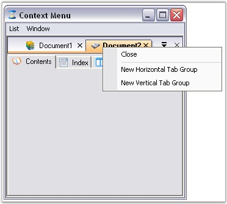
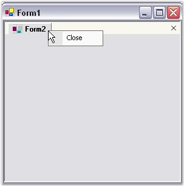
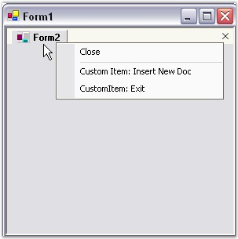

The TabbedMDI Layout mode enables the default Context Menu that pops-up whenever the user right clicks on any of the tabs.
The ContextMenuItem property is used to select the context menu that should be used along with the default tab context menu when the user right-clicks on a tab.
Below image will reproduce the Context Menu feature available in an MDI application in TabbedMDI mode.

Figure 1102: TabbedMDI with Context Menu Illustrated
Customize Context Menu
On right clicking the tabs in the TabbedMDI layout, a default context menu will appear. This context menu can be customized programmatically, to add custom bar items.
· Create a TabbedMDI Layout.
· Add the below code snippets in the respective places as directed.
· The below given code will add two bar items to the default context menu. The same is shown in the image below.
|
[C#]
//Add Namespace using Syncfusion.Windows.Forms.Tools.XPMenus;
// Append menus to the standard MDI tab context menu. //Adding Bar Item 1 ParentBarItem contextMenuItem = new ParentBarItem(); BarItem newDocItem = new BarItem(); newDocItem.ImageIndex = 5; newDocItem.Text = "Custom Item: Insert New Doc"; newDocItem.MergeOrder = 30; contextMenuItem.Items.Add(newDocItem);
//Adding Bar Item 2 BarItem exitItem = new BarItem(); exitItem.ImageIndex = 2; exitItem.Text = "CustomItem: Exit"; exitItem.MergeOrder = 30; contextMenuItem.Items.Add(exitItem); contextMenuItem.BeginGroupAt(newDocItem); // Items in this Parent Bar Item will be merged with the standard context menu Parent Bar Item of the MDI tab. tb.ContextMenuItem = contextMenuItem; |
|
[VB.NET]
' Add Namespace Imports Syncfusion.Windows.Forms.Tools.XPMenus
' Append menus to the standard MDI tab context menu. Dim contextMenuItem As ParentBarItem contextMenuItem = New ParentBarItem()
' Bar Item 1 Dim newDocItem As BarItem newDocItem = New BarItem() newDocItem.Text = "Custom Item: Insert New Doc" newDocItem.MergeOrder = 30 contextMenuItem.Items.Add(newDocItem)
' Bar Item 2 Dim exitItem As BarItem exitItem = New BarItem() exitItem.Text = "CustomItem: Exit" exitItem.MergeOrder = 30 contextMenuItem.Items.Add(exitItem) contextMenuItem.BeginGroupAt(newDocItem) ' Items in this Parent Bar Item will be merged with the standard context menu Parent Bar Item of the MDI tab. tabbedMDIManager.ContextMenuItem = contextMenuItem |

Figure 1103: Default Context Menu

Figure 1104: Context Menu with Custom Bar Items
See Also
How to remove the Context Menu for a particular tab?